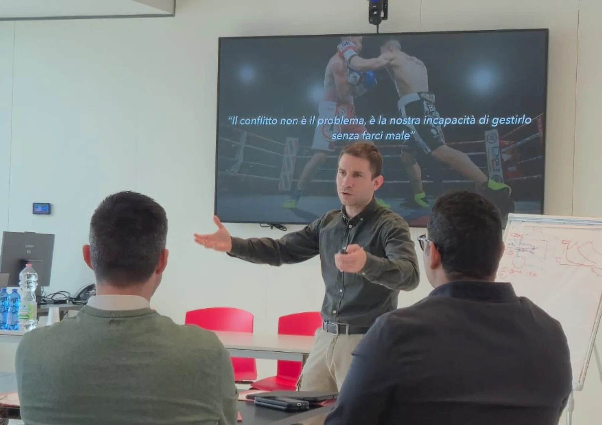
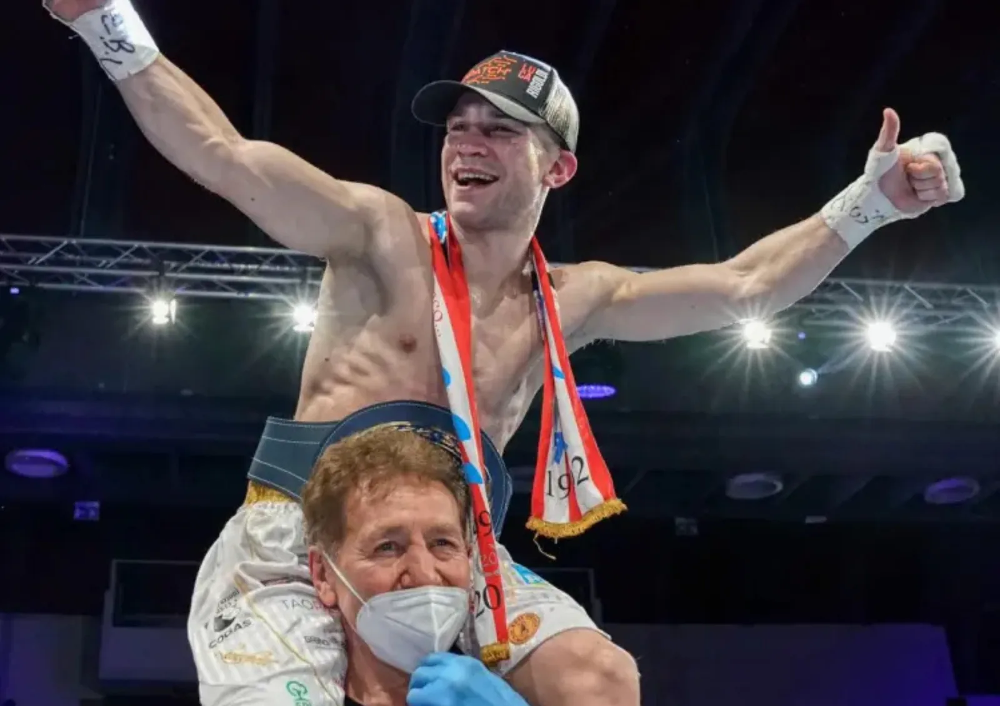
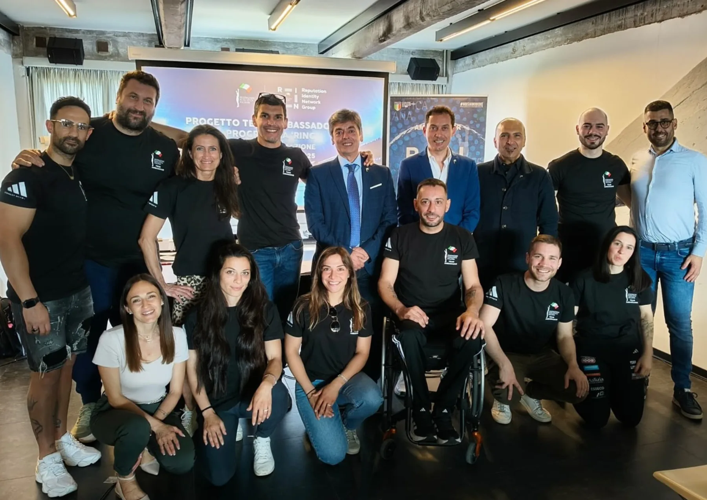
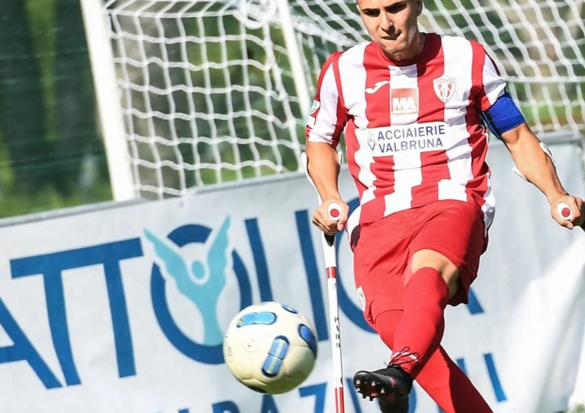
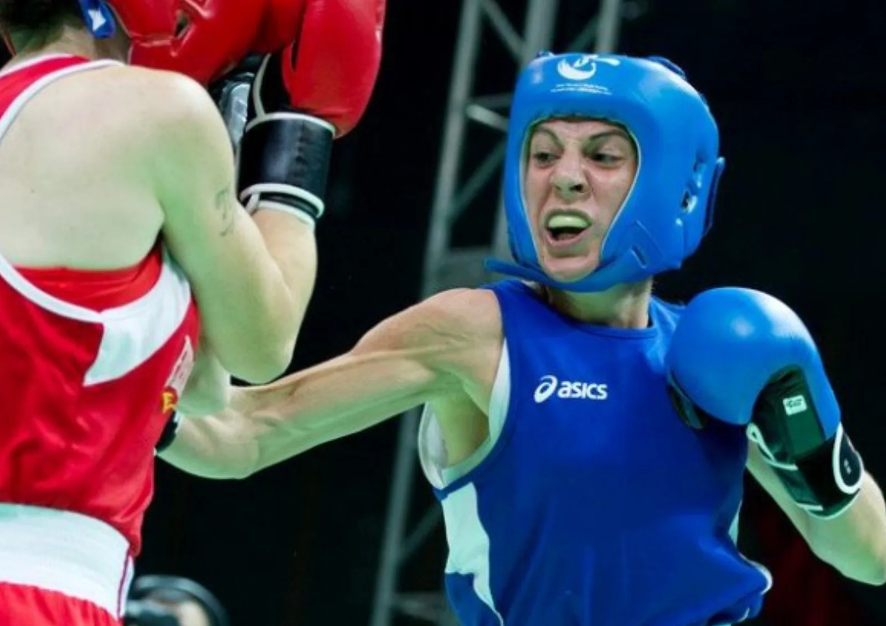
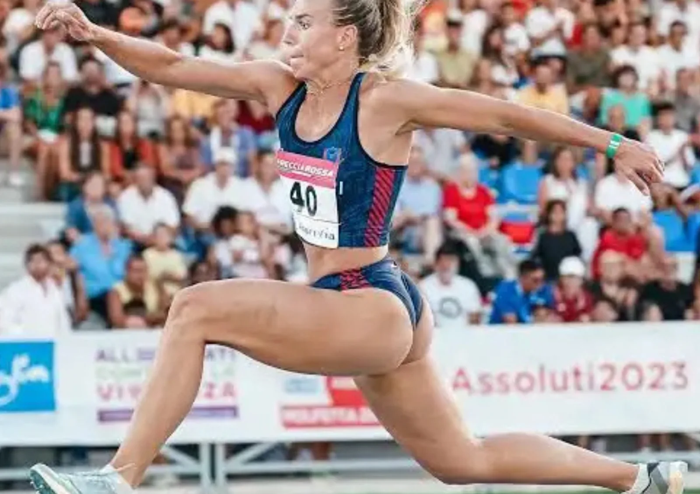
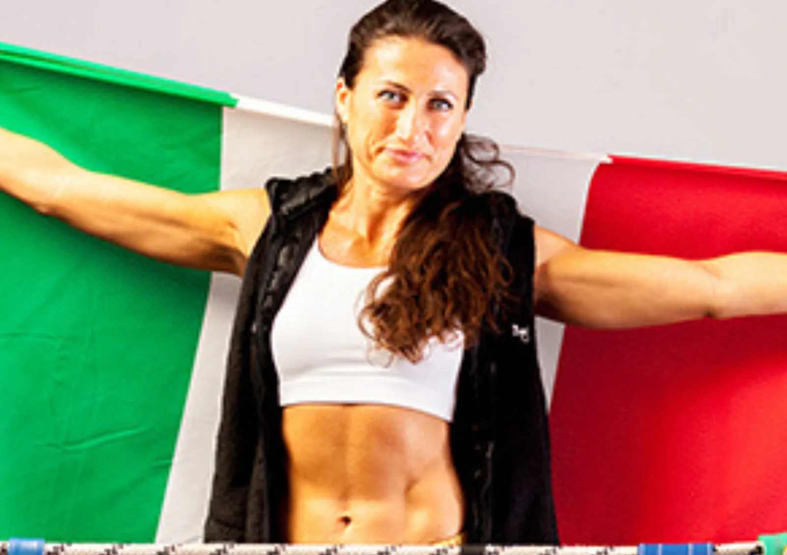
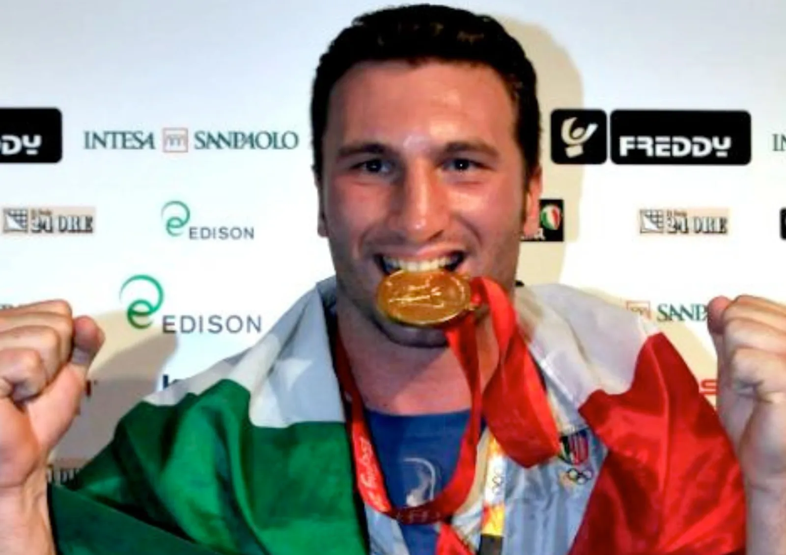

Perché sceglierla
Per superare la formazione generica e costruire un percorso memorabile, concreto e allineato ai fabbisogni formativi reali.
Sport Academy aziendale
BeOx progetta e porta in azienda Sport Academy su misura: percorsi in più incontri con speech e interventi di grandi campioni sportivi, affiancati da formatori aziendali BeOx, per trasformare valori, strategie e mindset dello sport di alto livello in strumenti concreti per la crescita personale, professionale e organizzativa.
BeOx Sport Academy
È un'Academy aziendale su misura composta da un insieme di incontri e momenti formativi in azienda, pensati per team, manager o prime linee.
In ogni incontro si affrontano tematiche sensibili e di interesse per l'organizzazione con il coinvolgimento di grandi campioni sportivi, affiancati da formatori BeOx con esperienza delle dinamiche aziendali, per trasformare mindset, resilienza, leadership, collaborazione e gestione della pressione in comportamenti applicabili.
Per superare la formazione generica e costruire un percorso memorabile, concreto e allineato ai fabbisogni formativi reali.
HR, manager, prime linee, team commerciali, reparti e aziende che vogliono far crescere persone, cultura e performance.
BeOx analizza il bisogno, seleziona i campioni, costruisce gli incontri e facilita il trasferimento nel lavoro quotidiano.
Oltre lo speech motivazionale
Molti eventi aziendali emozionano per un'ora e poi si spengono. La Sport Academy BeOx nasce per evitare l'effetto "evento singolo": non porta in azienda contenuti generici, ma un percorso costruito sui veri bisogni formativi dell'organizzazione.

Il campione racconta una storia potente, ma senza un collegamento preciso con azienda, pubblico e obiettivi.
I partecipanti escono motivati, ma non hanno strumenti per trasformare l'energia in azioni quotidiane.
Si parla di performance, resilienza o leadership senza partire dalle sensibilità reali dell'azienda.
La metafora sportiva resta bella da ascoltare, ma non viene decodificata nel contesto personale e aziendale.
Per chi è pensata
È indicata quando l'azienda vuole attivare un percorso ricorrente, memorabile e concreto su mindset, performance, leadership, collaborazione e gestione delle sfide.
Per costruire academy interne, percorsi formativi e iniziative di engagement con alto impatto.
Per lavorare su leadership, responsabilità, decisione, feedback e gestione della pressione.
Per allenare obiettivi, resilienza, energia, motivazione e cultura della performance.
Per rafforzare appartenenza, collaborazione, fiducia e linguaggio comune.
Prima leggiamo il bisogno
Prima di costruire una Sport Academy, BeOx aiuta HR e manager a individuare le priorità formative reali: mindset, leadership, collaborazione, resilienza, pressione, motivazione e performance.
Il progetto Sport Academy
La Sport Academy nasce da un'analisi dei fabbisogni formativi e dei temi su cui l'azienda vuole lavorare. Da lì BeOx costruisce un percorso modulare: ogni incontro mette al centro un valore, una skill o un mindset sportivo da trasformare in pratica aziendale.
Il racconto diretto dei campioni cattura l'attenzione, ispira e rende vivi concetti come pressione, resilienza, disciplina, squadra e performance. Il formatore BeOx facilita la decodifica della metafora e aiuta i partecipanti a portarla nel proprio ruolo.
Richiedi una proposta su misura
Il valore dei campioni
BeOx identifica e propone all'azienda i grandi campioni più adatti al percorso: atleti che hanno vissuto in profondità quei valori, quelle skills e quel mindset che hanno permesso loro di raggiungere risultati straordinari nonostante sfide, difficoltà e ostacoli.
Ci occupiamo dell'ingaggio, del brief, della costruzione dell'intervento e della personalizzazione del racconto. Il risultato non è una testimonianza generica: è un incontro progettato per parlare al tuo pubblico.

Sport Academy in immagini
Una selezione di immagini che racconta l'alternanza tra testimonianza sportiva, ispirazione e trasferimento aziendale.






Temi affrontabili dai campioni
Non partiamo da un catalogo di prodotti. Partiamo dai bisogni dell'azienda e scegliamo il campione, la disciplina sportiva e il taglio dell'intervento più adatti per rendere immediato il collegamento con il lavoro quotidiano.
La metafora del confronto sportivo aiuta a leggere ostacoli, pressione, errori e momenti duri senza bloccarsi, trasformandoli in lucidità, apprendimento e ripartenza.
La prestazione sportiva rende concreto il valore del lavoro quotidiano: fissare obiettivi, mantenere continuità, allenare disciplina e misurare progressi reali.
Lo sport di squadra permette di lavorare su guida, ascolto, feedback, responsabilità individuale e capacità di contribuire al risultato comune.
La metafora sportiva aiuta a rendere visibili ruoli, contributo individuale, fiducia reciproca e disponibilità a mettersi al servizio del gruppo.
La metafora sportiva permette di affrontare diversità, cambiamento, limiti percepiti e significato della performance con un linguaggio semplice e diretto.
Metodo BeOx
BeOx presidia l'intero processo: analisi, progettazione, selezione dei campioni, ingaggio, personalizzazione degli interventi e facilitazione aziendale.
Raccogliamo obiettivi, sensibilità aziendali, pubblico, vincoli e priorità formative.
Definiamo i focus dell'Academy: mindset, squadra, resilienza, pressione, leadership o performance.
Proponiamo i profili sportivi più coerenti e gestiamo ingaggio, brief e preparazione.
Costruiamo incontri coerenti con linguaggio, cultura, obiettivi e messaggio aziendale.
Affianchiamo il campione con un formatore aziendale che facilita debrief e trasferimento.
Trasformiamo metafore e storie in comportamenti, routine, accordi e azioni concrete.
Il ruolo di BeOx
BeOx segue l'intero sviluppo dell'Academy in costante confronto con HR, ufficio formazione o referenti aziendali. Coordina la parte formativa e logistica, prepara gli incontri e assicura che ogni intervento resti collegato ai bisogni reali dell'azienda.
Ingaggio e gestione degli sportivi coinvolti nel percorso.
Progettazione dei contenuti e dei materiali didattici.
Coordinamento dell'intero progetto, dalla scaletta alla logistica.
Presenza di un formatore o una formatrice BeOx per moderare gli incontri.
Traduzione dei contenuti sportivi in chiave personale, professionale e aziendale.
Cosa allena
Attraverso il racconto diretto dei campioni e il supporto del formatore BeOx, l'Academy aiuta le persone a leggere sé stesse, il team e il contesto con nuovi strumenti.
Sviluppare determinazione, disciplina, visione, responsabilità e orientamento al risultato.
Allenare la capacità di attraversare ostacoli, errori e momenti difficili senza perdere direzione.
Rafforzare fiducia, collaborazione, senso di appartenenza e responsabilità condivisa.
Migliorare gestione della performance, lucidità, energia e decisione nei momenti complessi.
Trasferire ascolto, feedback e chiarezza del linguaggio sportivo nella relazione professionale.
Innescare nuovi comportamenti, maggiore consapevolezza e continuità dopo ogni incontro.
Campione + formatore
Il campione catalizza l'attenzione, ispira e rende memorabile il tema. Il formatore BeOx aiuta i partecipanti a decodificare la metafora sportiva, collegarla al proprio ruolo e trasformarla in strumenti concreti per il lavoro quotidiano.
Costruisci il tuo percorsoCosa resta dopo
Non solo energia e ispirazione: un percorso pensato per aiutare HR, manager e responsabili a innescare crescita e cambiamento positivo.
Metafore semplici e potenti per parlare di pressione, obiettivi, squadra, errore e performance.
I partecipanti riconoscono dinamiche, abitudini e leve personali da allenare.
Debrief, domande guida, routine e azioni da riportare nel proprio ruolo.
Un percorso che aiuta a passare dall'ispirazione alla pratica e dalla pratica alla continuità.
Cosa ricevi
Dopo il primo confronto BeOx può costruire una proposta che mette in ordine obiettivi, pubblico, temi, durata, campioni possibili, ruolo del formatore e modalità di trasferimento operativo.
Richiedi una proposta su misuraAnalisi del contesto aziendale e dei fabbisogni formativi.
Ipotesi di percorso in più incontri, con obiettivi e moduli.
Proposta dei campioni sportivi più coerenti con i temi scelti.
Presenza del formatore BeOx per debrief e applicazione pratica.
Indicazioni su logistica, durata, pubblico e modalità di ingaggio.
Sport Academy in tutta Italia
BeOx progetta Sport Academy aziendali in presenza o in format ibridi nelle principali aree business italiane: Milano, Roma, Torino, Bologna, Padova, Verona, Vicenza, Venezia, Treviso, Firenze, Genova, Napoli, Bari e altre città su richiesta.
Verifica disponibilità e formatFAQ Sport Academy
È un percorso formativo su misura che porta in azienda valori, strategie e mindset dello sport di alto livello attraverso grandi campioni sportivi e formatori BeOx.
Sì. La Sport Academy non è uno speech copia e incolla: parte dai fabbisogni formativi, prevede più incontri, campioni selezionati e trasferimento operativo nel contesto aziendale.
BeOx identifica, propone e ingaggia i campioni più adatti in base a tema, pubblico, obiettivi e cultura aziendale. Ogni intervento viene preparato su misura.
Resilienza, gestione delle difficoltà, capacità di reagire ai colpi, obiettivi, costanza, disciplina, leadership, lavoro di squadra, comunicazione, responsabilità, ruolo, appartenenza, inclusione, adattamento al cambiamento, motivazione e significato della performance.
Sì. Lo sport viene usato come metafora formativa, non come prestazione fisica. Il focus è su comportamenti, mindset, responsabilità e applicazione professionale.
Sì. BeOx può portare la Sport Academy in azienda oppure in location esterne selezionate, adattando format, logistica e modalità al contesto.
BeOx realizza Sport Academy in tutta Italia, tra cui Milano, Roma, Torino, Bologna, Padova, Verona, Vicenza, Venezia, Treviso, Firenze, Genova, Napoli e Bari.
La durata viene progettata sui bisogni dell'azienda: può essere un ciclo breve di incontri, un percorso trimestrale, semestrale o una academy annuale. BeOx definisce numero di incontri, campioni, formatore e modalità in base a obiettivi, pubblico e budget.
Il costo dipende da numero di incontri, campioni coinvolti, livello di personalizzazione, città, logistica, platea e presenza del formatore BeOx. Per una proposta accurata è utile indicare obiettivi, periodo, partecipanti e temi prioritari.
Sì. La Sport Academy è indicata per manager, prime linee, team commerciali, HR, reparti operativi e popolazione aziendale. I moduli possono lavorare su leadership, performance, resilienza, pressione, motivazione, fiducia e collaborazione.
Sì. BeOx può partire da brief, survey, iCheck Team o analisi dei fabbisogni formativi per costruire una Sport Academy coerente con bisogni reali, priorità aziendali e obiettivi di crescita.
Alcune delle realtà con cui collaboriamo per formazione aziendale, team building, eventi, percorsi sportivi e sviluppo dei team.


Richiedi una proposta
Raccontaci obiettivi, pubblico, temi sensibili e numero indicativo di partecipanti. Ti aiuteremo a capire quali campioni, quali incontri e quale struttura possono generare più valore.